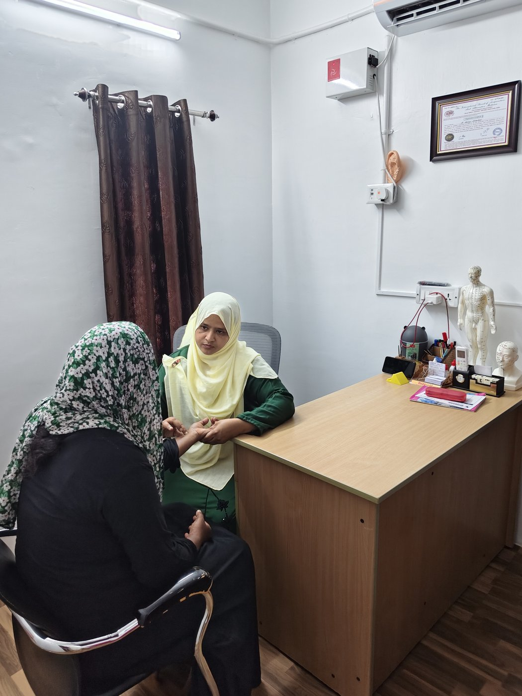
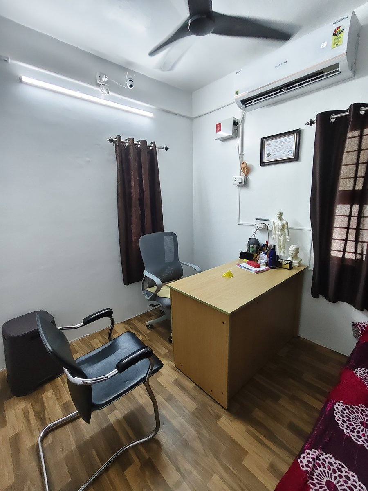
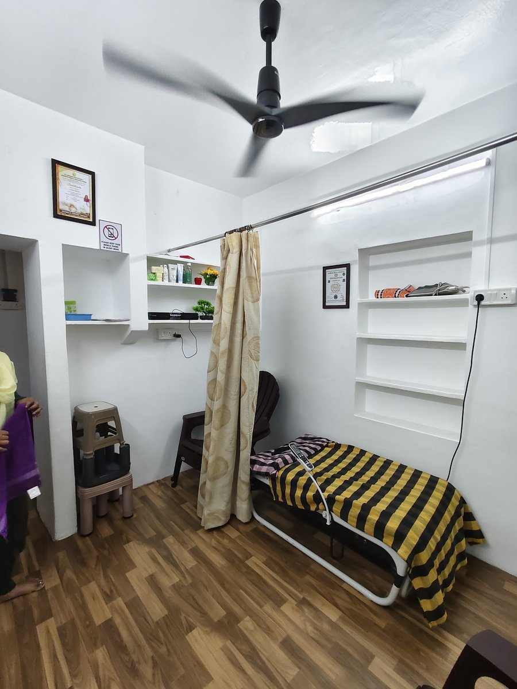
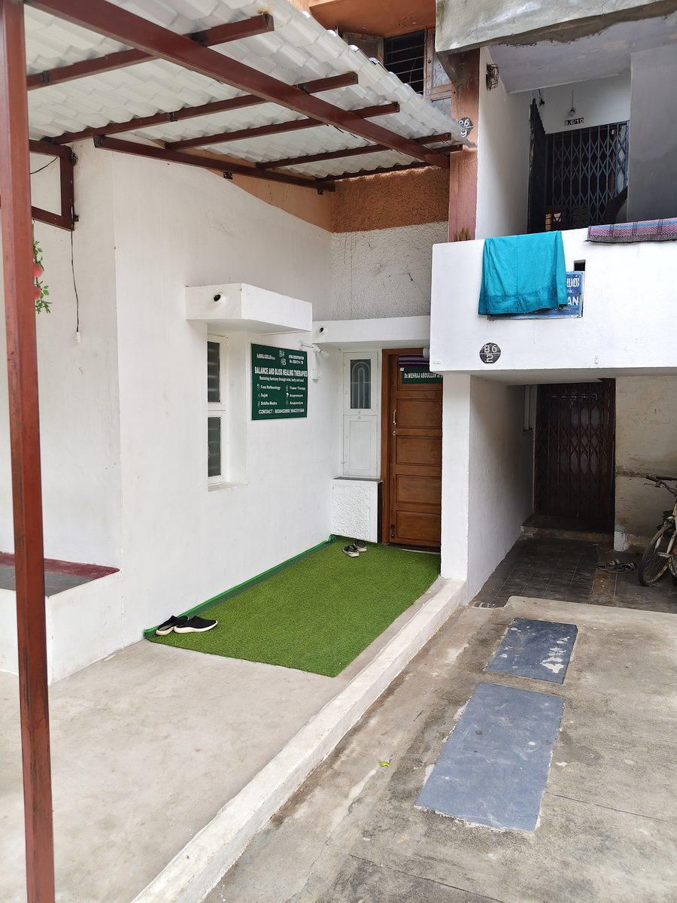
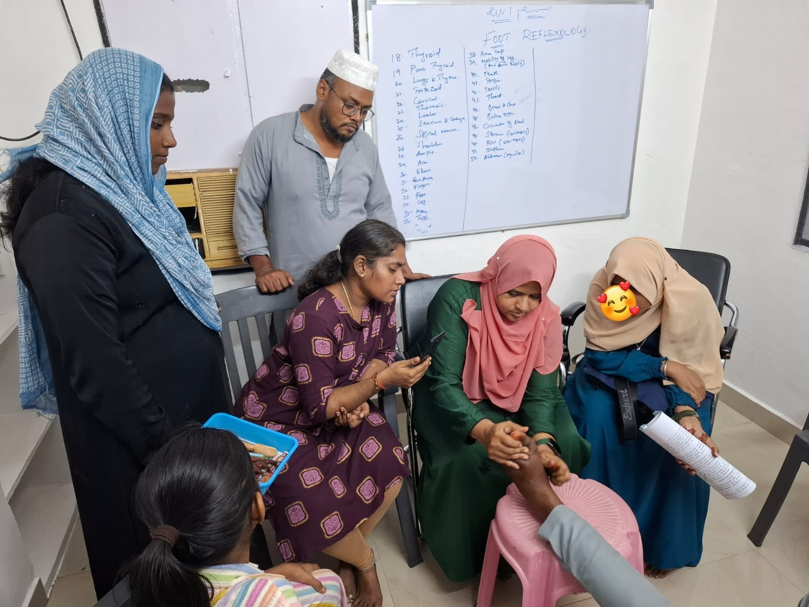
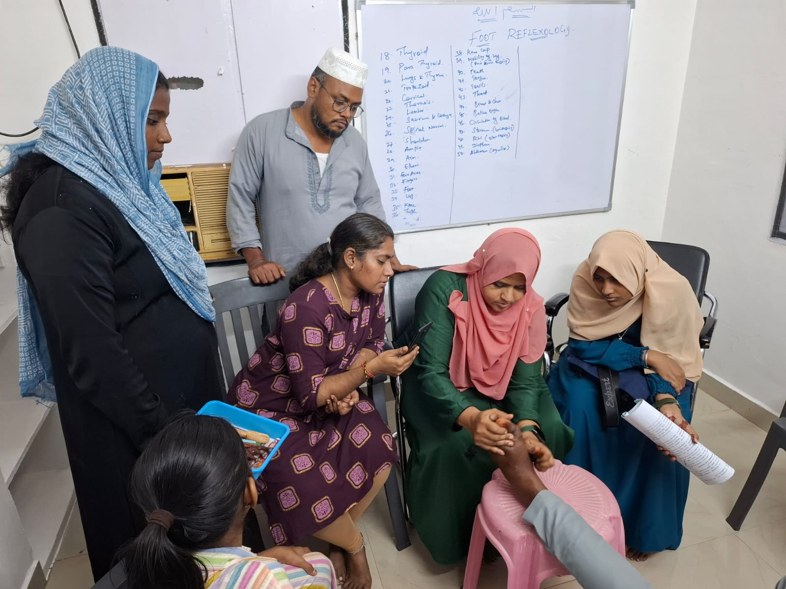

About Balance & Bliss
Dedicated to Drugless Medicine, Classical Acupuncture, and Foot Reflexology under the clinical leadership of Dr. M. Mehraj Abdullah, M.D (Acu).
Dr. M. Mehraj Abdullah, M.D (Acu)
Dr. M. Mehraj Abdullah is a certified practitioner of Drugless Medicine, specializing in clinical Foot Reflexology and Classical Acupuncture. Registered under ATAMA (ATAMA Reg. No: 20261714 / TN), Dr. Mehraj Abdullah is devoted to helping patients overcome acute and chronic suffering without relying on synthetic pharmaceuticals or invasive surgical interventions.
Over 4 years of hands-on clinical practice and having personally treated more than 200+ patients in Madurai, Dr. Abdullah combines ancient Eastern meridian science with modern neurological reflex zone knowledge. His therapies target the central nervous system, visceral organs, and spinal mechanics to reactivate the body’s innate regenerative pathways.
- Qualification M.D (Acupuncture)
- Registration ATAMA 20261714 / TN
- Clinical Experience 4+ Years
- Patients Treated 200+ Documented
- Primary Focus Clinical Foot Reflexology
- Languages English & தமிழ் (Tamil)

The Three Pillars of Our Healing Academy
At Balance and Bliss, we approach wellness as a harmonious equilibrium between the neurological system, vital circulation, and internal organ function.
Non-Drug Medicine
Treating the root physiological causes instead of merely suppressing superficial symptoms. We use the body's natural reflex mechanisms to stimulate healing without drug toxicity.
Personalized Time & Care
Every patient receives unhurried, private one-on-one attention from Dr. Mehraj Abdullah. We listen to your entire health journey and conduct comprehensive diagnostic mapping.
Academic Excellence
As an Academy, we continually bridge traditional Siddha mudra, Sujok energy points, and classical acupuncture meridian physics with modern clinical safety standards.
Our Three-Step Healing Journey
Each patient's path to lasting relief is structured through three progressive clinical stages, guided personally by Dr. M. Mehraj Abdullah.
Initial Diagnostic Assessment
Phase 1: Root Cause MappingWe begin with an exhaustive 45-minute clinical intake. Dr. Mehraj palpates tender reflex zones on your feet, inspects spinal alignment, checks meridian balance, and reviews your medical history to map the primary physiological stressors.
Custom Multi-Modality Care
Phase 2: Active Treatment SessionA customized protocol combining warm hydrotherapy foot spa immersion, targeted reflex zone manipulation, sterile acupuncture meridian needle placement, and far-infrared spinal traction to dissolve spasms and restore circulation.
Stabilization & Lifestyle
Phase 3: Preventing RecurrenceLong-term relief requires sustaining homeostasis. We provide personalized posture ergonomics, hydration guidance, and gentle mudra practices, accompanied by scheduled milestone reviews to ensure long-term vitality.
A Calm, Hygienic Environment for True Recovery
Conveniently situated in Housing Board Colony, K.K Nagar, Madurai, our clinic is crafted with serene acoustics, private treatment spaces, and dedicated on-premises vehicle parking.

Private Consultation Room
Confidential diagnostic assessments, pulse analysis, and reflex mapping in a serene, quiet atmosphere.

Dedicated Therapy Cubicles
Individualized treatment spaces fitted with medical-grade sterile hygiene and soothing ambient lighting.

On-Premises Parking
Hassle-free parking right in front of the clinic for two-wheelers and cars in quiet Housing Board Colony.


Balance & Bliss Academy
In addition to patient care, Dr. M. Mehraj Abdullah directs the Balance & Bliss Academy, empowering students, doctors, and wellness seekers with certified drugless healing expertise:
Ready to Experience Natural Healing?
Schedule your comprehensive diagnostic consultation with Dr. M. Mehraj Abdullah today.